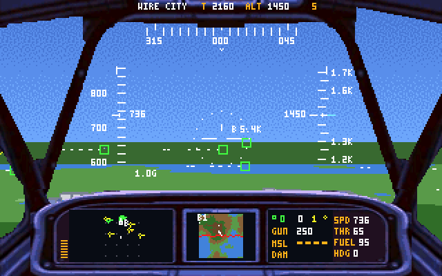
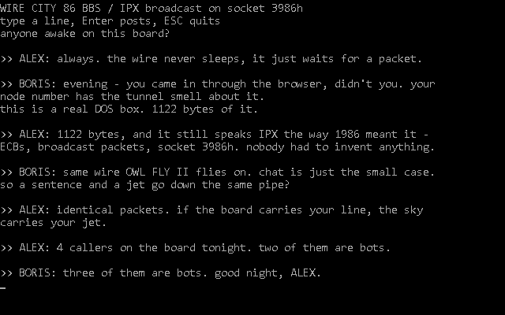
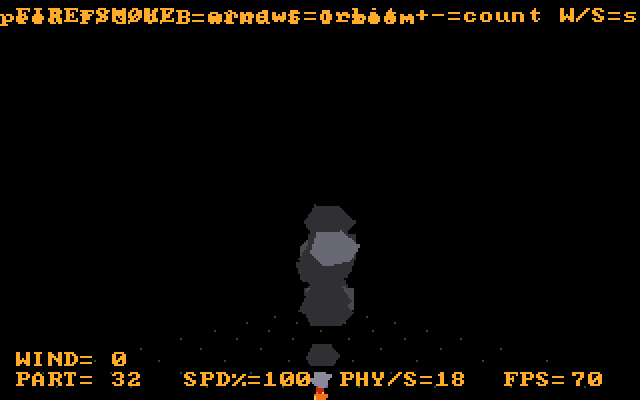

W I R E C I T Y 8 6
▶ ENTER THE WIRE CITY BBSThe board is a real DOS program, not a web chat. A 1986-style terminal that speaks IPX — the same wire OWL FLY II flies on, tunneled through WebSocket — so a DOSBox in your browser, a real machine on a real LAN and the OWLOS regulars all end up on one board. Nothing to install, no account: type a handle, press ▶, you are on the wire. It is also the honest proof the network layer works: if the chat carries your line, the multiplayer sky will carry your jet.
GAMES

OWL FLY II 105 KB · MULTIPLAYER
The successor, on the wire: one shared sky over IPX-through-WebSocket, and no menu — you arrive watching the war through an orbit camera, and Enter takes a jet, stopped on your own runway. An F-15 SE II cockpit with NATO-shape radar, three MFD pages, recorded sound through one DMA ring, and nameplates over every human in view.

OWL FLY 40 KB
The combat flight simulator: a procedural island, a destructible city, two air forces of five aircraft types across a jagged front line, homing missiles, a photo cockpit with a working radar, and a real jet engine in one Sound Blaster channel. Fly, owl!

WIRE CITY 5.5 KB
The 1986-style original that started it all: a wireframe night-flight over a procedural megacity. One source file, hidden lines by the painter's algorithm, banking turns. The ancestor.

THE FLIGHT SCHOOL 27 KB
Take off, fly the pattern, grease the landing. A real airfield - numbered runway, taxiway, hangars, a control tower in obstruction stripes, a spinning radar - and a flight model that knows VR, the stall and the ground cushion. Every 3-D model rides the Blender → OBJ → 8086 precompiler pipeline.
EXAMPLES — the teaching machines: one idea each, a few KB apiece, source open

THE WIRE CITY BBS 1.1 KB · ON THE WIRE
The 1986 bulletin board, and the smallest honest network program here: a real DOS terminal that hands its lines to the IPX driver and prints what comes back. Tunneled through WebSocket, so your browser, a real machine on a real LAN and the OWLOS bots share one board. Nothing to install, no account — and it is the same wire OWL FLY II flies on.

THE HANGAR 5.4 KB
All five aircraft with ROM-font spec sheets. Up/Down to cycle, arrows to spin, Space blows one apart - and the painter's sort keeps ordering the debris.

THE ISLAND FACTORY 5 KB
Diamond-Square on a torus, seeded by the clock: any key mints a fresh island. The generator the games fly over - and the one that taught us two number-theory lessons.

THE AVIONICS 3.5 KB
A flying instrument panel with no world attached: artificial horizon, tapes with the red stall line, a compass, a toy flight model. Arrows are the stick.

THE FIRE+SMOKE LAB 5.2 KB
A particle laboratory: fire ages into spinning polygonal smoke puffs under buoyancy, drag, vortex and turbulence. Physics and render run on separate clocks - W/S scales physics, +/- sets the particle count, the readout shows both rates live. Orbit with the arrows, tune, discuss.